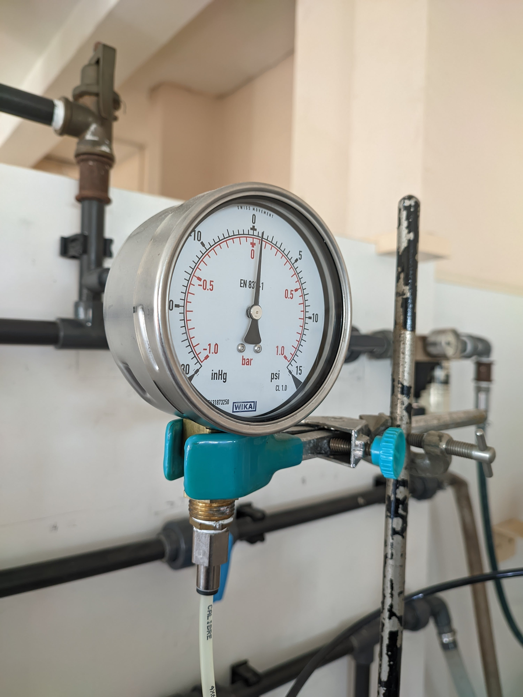

Travaux Pratiques
TP Bases du génie des Procédés(S1):

Ebulliométrie
Objectifs
Déterminer la chaleur latente de vaporisation de l'eau et étudier l'effet de la pression sur la température d'ébullition.
Manipulation
1. Préparation : Remplir le ballon d'eau, tester l'étanchéité et ajuster la pression à 0,2 bar.
2. Chauffe : Chauffer l'eau à puissance maximale, puis ajuster lorsque l'ébullition approche.
3. Mesures : Relever la température et la pression à chaque palier de 0,1 bar entre 0,2 et 1 bar.
4. Refroidissement : Laisser l'eau refroidir après coupure de la chauffe.
Exploitation
1. Graphiques : Tracer Ocb = f(p) et ln(p) = f(1/T), comparer avec les données théoriques.
2. Analyse : Calculer la chaleur latente et comparer avec les valeurs théoriques.
3. Conclusion : Analyser l'effet de la pression sur la température d'ébullition et la chaleur latente.

Conduction
Objectifs
Étudier la conduction thermique dans une barre métallique (cuivre et aluminium) et déterminer la conductivité thermique.
Dispositif Expérimental
L'installation comprenait 4 cylindres (2 en cuivre, 2 en aluminium) de 84 cm de long et 4 cm de diamètre, chauffés à une extrémité et refroidis à l'autre. Des thermocouples ont mesuré la température à intervalles réguliers.
Mise en Route
Le dispositif a été mis en route sous la supervision de l'enseignant. La température de l'extrémité chauffée a été imposée à 60°C.
Mesures
Les températures ont été relevées toutes les 3 minutes pendant 1 heure. Les profils de température ont été tracés à différents moments (6 min, 21 min, 42 min, 60 min).
Traitement des Résultats
L'établissement du régime permanent a été suivi et le temps nécessaire pour sa stabilisation a été déterminé. La conductivité thermique a été calculée en utilisant la formule :
λ = Φ * Δx / (S * ΔT)
Conclusion
La variation de température a été analysée et la conductivité thermique des matériaux étudiés a été déduite.
Important
L'expérience a été réalisée sous la supervision de l'enseignant. L'installation a été arrêtée à la fin de l'expérience.

Mesure de débits
Objectifs
Étudier la mesure du débit volumétrique et de la pression différentielle dans un circuit fermé, à l'aide de différents débitmètres.
Dispositif Expérimental
L'installation comprend : un bac d'alimentation (400 L), une pompe centrifuge, un bac intermédiaire (200 L), un tube de Venturi (D = 42 mm, d = 26 mm), et un diaphragme (D = 42 mm, orifice d = 26 mm). La pression différentielle est mesurée entre l'entrée et la sortie du tube de Venturi et du diaphragme.
Procédure
1. Mettre en marche la pompe pour faire circuler l'eau dans le circuit fermé.
2. Mesurer le débit pour 5 valeurs différentes en utilisant un débitmètre électromagnétique et un rotamètre à tube.
3. Effectuer les relevés de débit et de pression et les consigner dans un tableau préparé.
4. Arrêter l'installation en présence de l'enseignant.
Résultats
Les différences de pression (ΔP) ont été mesurées pour chaque valeur de débit, et les résultats ont été enregistrés dans un tableau pour chaque débit volumétrique moyen (Qm) obtenu.
Conclusion
L’expérience a permis de bien comprendre l'effet Venturi et le fonctionnement des débitmètres. Les mesures ont montré une corrélation entre la différence de pression et le débit mesuré.

Loi des gaz
Objectifs
Vérifier les trois lois qui définissent la notion de gaz parfait :
- La relation de Charles
- La loi de Gay-Lussac
- La loi de Boyle-Mariotte
Matériel utilisé
- Interface UI-5000
- Capteurs de température et de pression
- Cylindre à piston
- Bouilloire pour chauffer l'eau
- Bac en plastique
- Capteurs et programme d'acquisition de données
Procédure
1. Relation de Charles
Objectif : Vérifier la relation entre le volume et la température d'un gaz à pression constante.
Étapes :
- Faire chauffer de l'eau à environ 80°C dans la bouilloire.
- Allumer l'ordinateur et l'interface d’acquisition. Ouvrir le programme d’acquisition pour enregistrer les données de température.
- Placer environ 1 litre d'eau à température ambiante dans un bac en plastique. Relever la température initiale et la position du piston.
- Ajouter progressivement de l'eau chaude pour augmenter la température d'environ 3 à 4°C. Maintenir la chambre en aluminium en position verticale et attendre la stabilisation avant de relever la température et la position du piston.
- Répéter cette opération pour obtenir dix points de mesure de température et de volume.
- Compléter le tableau de collecte des données, en calculant le volume associé à chaque température.
2. Loi de Gay-Lussac
Objectif : Vérifier la relation entre la pression et la température d'un gaz à volume constant.
Étapes :
- Fermer la vanne rouge pour isoler le cylindre piston.
- Lancer l’acquisition des données (pression et température) via l'interface.
- Faire chauffer l'eau à environ 80°C pour augmenter la température dans le cylindre.
- Relever les données de pression et température après chaque changement de température dans le cylindre.
3. Loi de Boyle-Mariotte
Objectif : Vérifier la relation entre la pression et le volume d'un gaz à température constante.
Étapes :
- Maintenir une température constante (via l'eau chaude) et varier le volume du gaz.
- Mesurer la pression et le volume à chaque étape.
- Compléter le tableau et analyser la relation inverse entre pression et volume pour valider la loi de Boyle-Mariotte.
Conclusion
L'expérience a permis de valider les trois lois fondamentales des gaz parfaits en mesurant les différentes relations entre température, pression et volume.

Echangeurs
Objectifs
Le but de cette étude est de mieux comprendre les principes fondamentaux du transfert de chaleur dans des systèmes industriels. Ces systèmes sont utilisés pour échanger de la chaleur entre deux fluides, et l'objectif est d'analyser les différents types d'échangeurs de chaleur, les mécanismes de transfert thermique, et d'étudier l'effet des paramètres influençant les performances des échangeurs.
Protocole de Mise en Route de l'Installation
1. Allumer la pompe et mettre en route les capteurs de chaleur.
2. S'assurer que les vannes sont ouvertes ou fermées selon la configuration choisie.
Cas numéro 1 : Co-courant
Les fluides circulent dans le même sens. Ouvrir les vannes v1, v4, v5, v8, et v9.
Cas numéro 2 : Contre-courant
Les fluides circulent dans des directions opposées. Ouvrir les vannes v1, v4, v5, v7, et v10.
3. Régler le débit d'arrivée de l'eau froide et chaude.
4. Vérifier que l'évacuation se fait bien dans les égouts.
Procédure pour Arrêter l'Installation
1. Fermer le robinet.
2. Éteindre la pompe.
3. Éteindre les capteurs.
Interprétation des Profils de Température
Les profils de température sont des outils précieux pour analyser les performances thermiques de l'échangeur de chaleur et pour choisir la configuration optimale selon les besoins spécifiques. Ils permettent de visualiser clairement la différence entre les configurations co-courant et contre-courant.
Observation : Le contre-courant est plus efficace, car il permet de maintenir une différence de température plus uniforme entre les deux fluides tout au long de l’échangeur. Cela se reflète dans des courbes de température presque parallèles.
Impact des Débits et de l'Écoulement sur l'Échange Thermique
Débit élevé (16/16) : Un débit plus élevé améliore le transfert thermique en permettant une meilleure convection et en prolongeant le temps d'échange thermique.
Débit réduit (16/8) : Un débit réduit entraîne une moins bonne efficacité thermique, car le fluide reste moins longtemps dans l’échangeur, réduisant ainsi la capacité d'échange thermique.
Contre-courant : Cette configuration offre une meilleure performance thermique, car la différence de température entre les fluides est maximisée sur toute la longueur de l’échangeur.
Co-courant : Cette configuration présente des performances thermiques moins bonnes, car la différence de température se réduit rapidement, limitant ainsi l'efficacité du transfert thermique.
Effet de la Longueur de l’Échangeur
L’échangeur a une longueur de 4,725 m avec une répartition équitable des thermocouples, ce qui permet de capturer l’évolution précise des températures. On observe qu’une plus grande longueur d’échangeur permet un meilleur transfert thermique, avec des courbes de température plus douces, car il y a plus de surface d’échange. Cet effet est particulièrement efficace en configuration contre-courant.
Conclusion
Cette étude a permis de comprendre les différentes configurations d’échangeurs de chaleur et d'analyser les paramètres influençant leur performance. En particulier, l’étude a confirmé que la configuration contre-courant est la plus efficace pour maximiser le transfert thermique. Le débit, la configuration des fluides, ainsi que la longueur de l’échangeur jouent des rôles cruciaux dans l’efficacité globale du transfert thermique.

Perte de charges
Lors du TP, nous avons analysé les pertes de charge sous leurs deux formes :
- Pertes de charge régulières : causées par le frottement du fluide dans les canalisations.
- Pertes de charge singulières : dues aux obstacles et changements de direction (Venturi, diaphragme).
Influence des Canalisations
Nous avons étudié l'effet de la rugosité des canalisations en comparant des tubes lisses et rugueux. La rugosité a un impact direct sur la résistance au passage du fluide.
Méthodologie
Pour mesurer les différences de pression, nous avons utilisé des picages aux points amont et aval des dispositifs. Nous avons également réglé les débits afin d'observer leur influence sur les pertes de charge.
Machine frigo
I. Le Cycle Frigorifique
Le fluide frigorigène utilisé dans l’installation est le R-134a (1,1,1,2-tétrafluoroéthane, C₂H₂F₄). Son rôle est de permettre l’échange thermique nécessaire au refroidissement. En sortie de l'évaporateur, il est sous forme gazeuse avant d’être comprimé par le compresseur, augmentant ainsi sa pression et sa température. Ce gaz chaud passe ensuite dans le condenseur, où un circuit d’eau froide permet sa liquéfaction par échange thermique. Le fluide, redevenu liquide, est ensuite détendu dans un détendeur, ce qui réduit sa pression et température avant son retour dans l’évaporateur pour absorber la chaleur de l’environnement et recommencer un nouveau cycle.
II. Protocole
Avant la mise en route, on s'assure que la vanne de sortie du condenseur est ouverte, puis on active l’alimentation en eau et en vapeur. Après avoir allumé l’installation et les différents équipements (compresseur, évaporateur), les paramètres sont ajustés via les contrôleurs (tension, intensité, débit). Des relevés sont effectués tout au long du cycle. Pour l’arrêt, on éteint les composants dans l’ordre inverse et on coupe les alimentations.
Nature du Fluide Utilisé
Le R134a est un fluide pur, stable thermodynamiquement, incolore, légèrement éthéré, avec une température critique de +101,1°C et une pression critique de 40,67 bar. Il est utilisé dans la réfrigération domestique, industrielle, automobile et médicale. Son PRG de 1430 kg eq.CO₂ est élevé, d’où une réglementation visant à limiter son utilisation.
Analyse des Paramètres
Les paramètres mesurés incluent la température à différentes étapes du cycle (entrée/sortie compresseur, condenseur, détendeur, évaporateur), les pressions absolues, ainsi que les valeurs électriques (tension, intensité, vitesse du compresseur). Les conditions opératoires varient en fonction des réglages (puissance de chauffe, débit d’eau) et influencent directement la stabilité thermique du système.
On note que la température augmente à la compression et diminue lors de la condensation, où le fluide cède sa chaleur au circuit d’eau. La pression reste stable tant que l’équilibre entre la chaleur transférée et la puissance fournie est maintenu. Une augmentation du débit d’eau accélère la condensation, tandis qu’une augmentation de la puissance de chauffe accroît la température et la pression dans le condenseur. Les variations du débit de R134a influencent directement les pressions observées.
Conclusion
Le cycle frigorifique fonctionne sur des équilibres thermodynamiques précis. L’augmentation de la puissance entraîne une élévation des températures et pressions. Le débit d’eau joue un rôle crucial dans l’efficacité du refroidissement. L’analyse des relevés permet d’optimiser les performances du système et de mieux comprendre les interactions entre les différents paramètres.

Pompe centrifuge
Introduction à la pompe centrifuge
Le banc de mesure de la pompe centrifuge permet de déterminer la pression différentielle entre le circuit d'aspiration et de refoulement lorsqu'une pompe est en fonctionnement dans un circuit fermé. Lors des essais, la pompe centrifuge est mise en marche avec une vitesse de rotation de 2400 TPM, et pour chaque débit mesuré, on relève la pression différentielle affichée de part et d'autre du diaphragme et la pression entre les points d'aspiration et de refoulement de la pompe.
Mesure du débit et pression différentielle
Les débits sont mesurés à l'aide de diaphragmes normalisés avec des zones d'utilisation spécifiques et des équations d'étalonnage permettant de calculer le débit en fonction de la pression différentielle. Les résultats obtenus sont récapitulés dans un tableau avec les valeurs de pression différentielle et de débit, et une courbe de la pression différentielle en fonction du débit est tracée et commentée.
Conclusion et analyse des performances
Cette expérience permet d’analyser les performances de la pompe centrifuge en fonction des variations de débit et de pression. Elle aide à comprendre comment la pression différentielle et le débit évoluent selon les conditions expérimentales et à optimiser l'utilisation de la pompe centrifuge dans des applications pratiques.